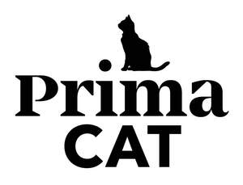

Trade Mark Journal No.2025/043 24 October 2025
UK00004277880 14 October 2025 (5,18,21,29,30,31)

- Class 5
- Vermin destroying preparations; sanitary preparations for medical purposes; vermin repelling preparations; dietary supplements for human beings; dietary supplements for animals; plasters, materials for dressings; pharmaceutical preparations for animals; pharmaceuticals; veterinary preparations; disinfectants; dietetic food preparations adapted for medical use; dietetic food adapted for veterinary use; pharmaceutical preparations for veterinary use; none of the aforementioned goods for use in the field of fish and reptile keeping.
- Class 18
- Animal skins; cattle skins; walking sticks; suitcases; whips; leather and imitations of leather; umbrellas and parasols; saddlery; saddlery, whips and apparel for animals; harnesses.
- Class 21
- Dishes [household utensils]; material for brush-making; brushes; combs; kitchen utensils; pottery; ceramics for household purposes; glassware; all-purpose portable household containers; bath sponges; porcelain; cleaning articles; glass, unworked or semi-worked, except building glass; steelwool.
- Class 29
- Jellies, jams, compotes, fruit and vegetable spreads; meat; meat extracts; milk; eggs; edible oils and fats; pickled fruits.
- Class 30
- Sauces [condiments]; sauces; coffee, teas and cocoa and substitutes therefor; ice cream; ice [frozen water]; artificial coffee; bread; baking powder; yeast; condiments; rice; mustard; sugar, honey, treacle; salt; cocoa; coffee; sugar; tapioca; tea; flour; cereal preparations.
- Class 31
- Fodder; live animals; malt; raw and unprocessed agricultural products; raw and unprocessed forestry products; raw and unprocessed horticultural products; seeds for planting; fresh fruits and vegetables; crop seeds; biscuits for animals; mixed animal feed; edible treats for animals; animal foodstuffs in the form of pieces; animal foodstuffs in the form of pellets; beverages for animals; biscuits for puppies; food for racing dogs; dog biscuits; bones for dogs; beverages for canines; dog treats [edible]; chewing bones for dogs; food preparations for dogs; digestible chewing bones for dogs; edible chews for dogs; pet food; none of the aforementioned goods for use in the field of fish and reptile keeping.
Prima Pet Premium Oy
Representative: Marks & Clerk LLP